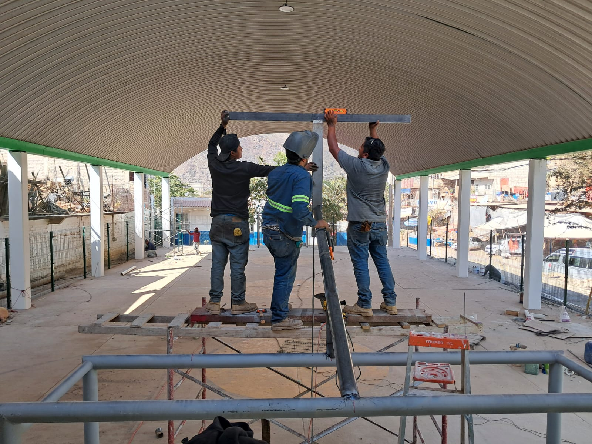
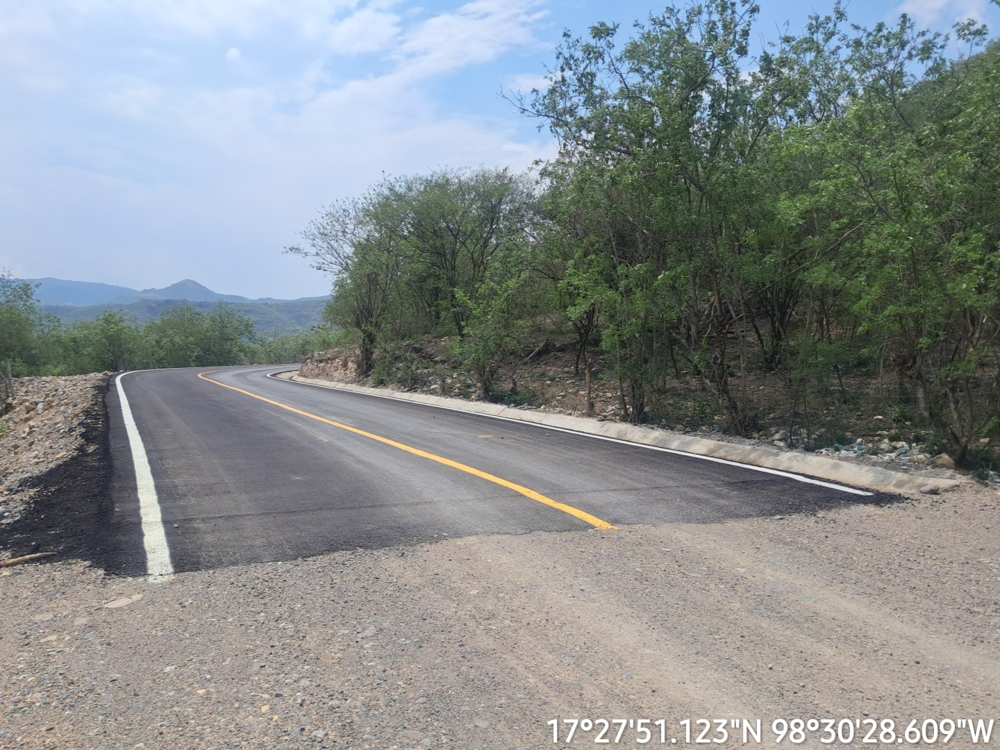
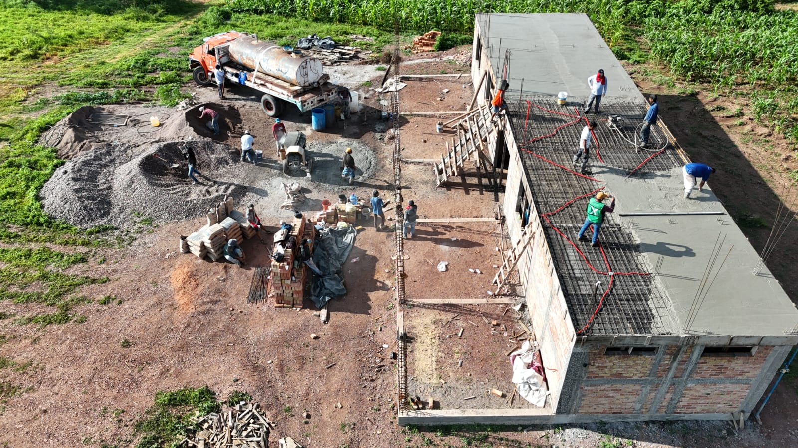
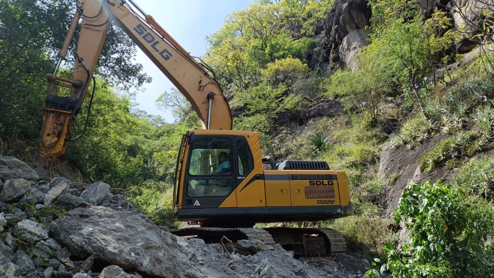
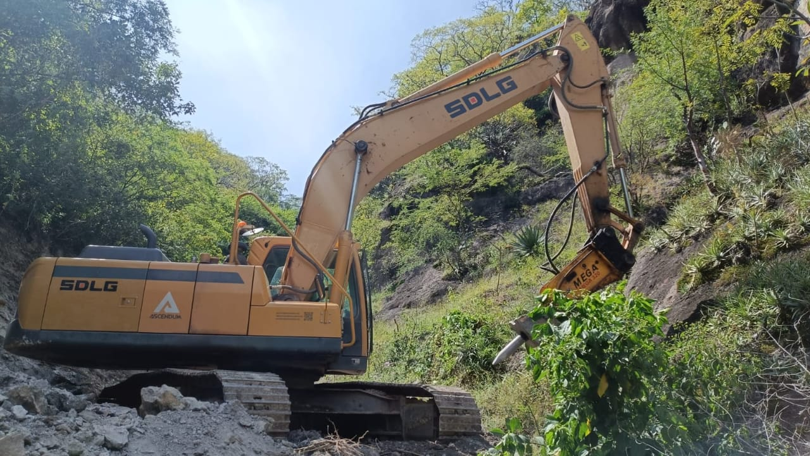
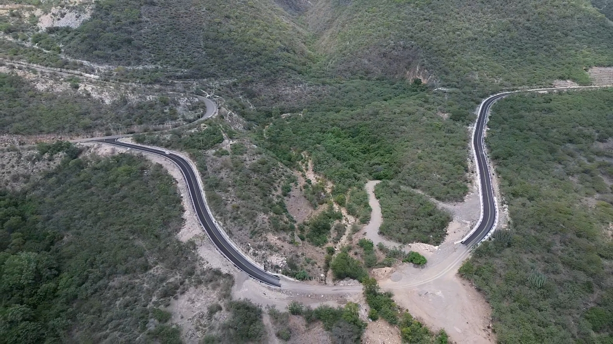
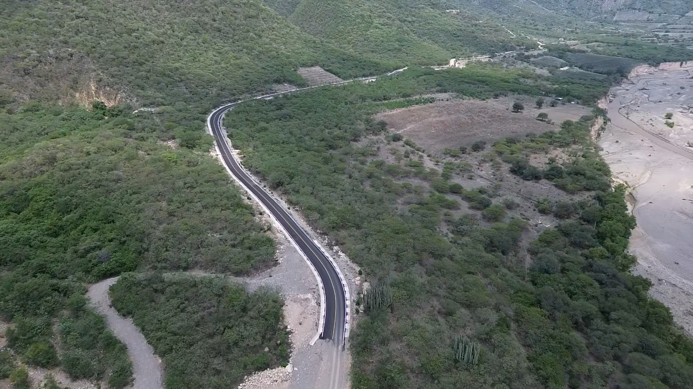

Canchas y estructuras metálicas
Construcción de espacios deportivos, techumbres, estructuras metálicas, cubiertas e instalaciones complementarias para uso público y privado.
En CONSTRUCCIONES VIDICOM ejecutamos proyectos de obra civil, infraestructura carretera, edificaciones, espacios deportivos y trabajos especializados con maquinaria pesada. Nuestro compromiso es entregar obras funcionales, seguras y duraderas, cumpliendo con los estándares de calidad, los tiempos establecidos y las necesidades de cada cliente.
Solicitar cotizaciónConstrucción de espacios deportivos, techumbres, estructuras metálicas, cubiertas e instalaciones complementarias para uso público y privado.
Ejecución de caminos, pavimentaciones, rehabilitación carretera, movimientos de tierra, compactaciones y preparación de superficies.
Desarrollo de edificaciones, losas, cimentaciones, drenajes, obras hidráulicas, estructuras y proyectos integrales de construcción.
Somos una empresa constructora ubicada en el estado de Guerrero, especializada en obra civil, infraestructura carretera, edificaciones, espacios deportivos y trabajos con maquinaria pesada. Trabajamos con responsabilidad, calidad técnica y atención directa a las necesidades de cada proyecto.
Desarrollar, construir y ejecutar obras de infraestructura con ética profesional, calidad, tecnología y compromiso, satisfaciendo las necesidades de nuestros clientes y superando sus expectativas en cada proyecto.
Consolidarnos como una constructora mexicana reconocida por la calidad de sus obras, la capacidad de su equipo de trabajo y el cumplimiento de estándares técnicos en la ejecución de proyectos de obra civil e infraestructura.
Algunos de nuestros trabajos en infraestructura, obra civil y construcción especializada.







C. Mariano Abasolo 54, Col. Centro, Atlixtac, Guerrero, C.P. 41440.
Email: constructorajenaco@outlook.com
Celular: 756 118 49 90